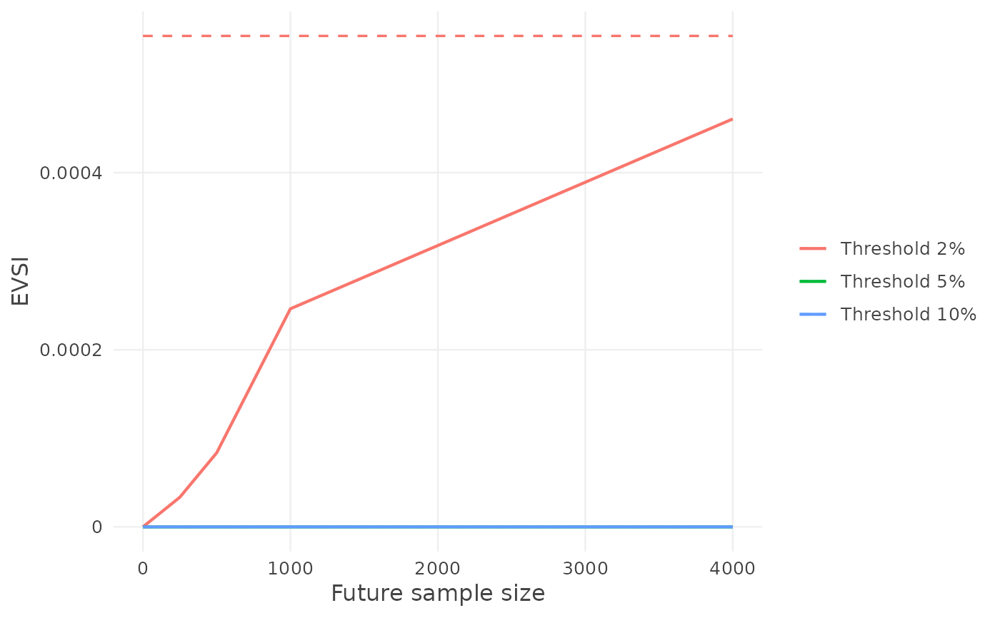

Expected value of sample information (EVSI) for model validation
evsi.RdThe expected gain in net benefit from a future validation study of size
\(N\) (future_n), added to the current sample, before deciding which
strategy to use. EVSI is between 0 and EVPI, and approaches EVPI as
\(N\) grows: comparing it with the cost of the study helps decide whether
more validation data are worth collecting.
Arguments
- x
A result of
nb_val(), for one model or several.- ...
More results of
nb_val(), for other models evaluated on the same data, outcome, thresholds and prior (and horizon, cause and censoring), combined as by c(). A result with one model given here with a name is labelled with its name.- future_n
Sizes of the future validation sample: one or more positive integers.
- n_sim
Number of draws. Default 1000.
- labels
Optional names of the models, one per model, in order; default: the models' labels.
Value
An object of class voipred_evsi, a list with estimates (a data
frame with columns threshold, future_n, EVSI and EVPI, one row per
threshold and future sample size), future_n, models, outcome,
censoring, prior, draws, n_sim and call. It has print(), summary(),
plot() and as.data.frame() methods; EVSI can also be drawn under the
decision curve with plot(<nb_val result>, evsi = ).
Details
For each of n_sim posterior draws (see "Uncertainty"), which define a
"true" population with the true net benefit of every strategy, and for each
\(N\), a future sample of \(N\) patients is drawn from that population
and combined with the current data, the strategy with the highest net
benefit in the combined data is chosen, and its true net benefit
recorded (Sadatsafavi et al. 2025):
binary outcome: the conjugate algorithm. The future sample is simulated from the draw (events, and the patients treated among them, binomial / multinomial), and the strategy with the highest posterior mean net benefit after updating the posterior with it is chosen;
survival and competing-risks outcomes (and case weights): the bootstrap algorithm. The draw's Bayesian-bootstrap weights \(W\) define the population; the future sample is \(N\) patients drawn from it (multinomial counts with probabilities \(W\), a future patient being a current patient, with the same follow-up), pooled with the current sample, and the net benefit recomputed with the same estimator as
nb_val(). With cIPCW (cipcw) the censoring model is refitted in every draw and every pooled sample (seecipcw_control()).
If strategies tie exactly in the combined data, the mean of their true net
benefits is recorded (a random choice among them). Then \(ENB_{sample}\)
is the mean of the recorded true net benefits and
\(EVSI = ENB_{sample} - ENB_{current}\), with \(ENB_{current}\) as in
evpi() (from the same draws). The true EVSI is never negative, but its
estimate can be slightly negative where EVPI is close to 0 (Monte Carlo
error; more draws make it smaller): read such values as 0.
Uncertainty
The uncertainty about the net benefit is its posterior (see the prior of
nb_val()), represented by n_sim draws, in each of which the net benefit of
every model, of treating all and of treating none is computed:
binary outcome: draws from the conjugate posterior of the prevalence and of each model's sensitivity and specificity, with the prior of
nb_val()(exact Beta / Dirichlet draws, as in bayesDCA). Several models are drawn jointly (a Dirichlet over the patterns of treat / do not treat across the models), so their correlation on the same patients is kept, and each model keeps its own posterior;survival and competing-risks outcomes, and binary outcomes with case weights (improper prior): the Bayesian bootstrap. Each draw gives the patients Dirichlet(1, ..., 1) weights (times the case weights) and recomputes the net benefit with the same estimator as
nb_val(). With cIPCW (cipcw), the censoring model is refitted in every draw and the censoring weights recomputed from it (seecipcw_control()).
The predicted risks are kept fixed in every draw. The expected net benefits are the means of the draws.
References
Sadatsafavi M, et al. Expected value of sample information calculations for risk prediction model validation. Medical Decision Making 2025; 45(3): 232-244.
Examples
df_dev_binary <- gusto[1:5000, ]
df_val_binary <- gusto[5001:5500, ]
fit <- glm(day30 ~ age + Killip + sysbp + pulse,
family = binomial, data = df_dev_binary)
df_val_binary$p <- predict(fit, newdata = df_val_binary, type = "response")
res <- nb_val(data = df_val_binary,
predicted_risk = df_val_binary$p,
outcome = "day30",
thresholds = c(0.02, 0.05, 0.1))
set.seed(1)
o <- evsi(res, future_n = c(250, 500, 1000, 4000))
o
#> EVSI: p; binary, n = 500, 1000 posterior draws
#> Before the future study (as for EVPI): prior improper Beta(0, 0), updated with the validation data (n = 500)
#> Future study: 250, 500, 1,000 or 4,000 more patients, drawn from that distribution; then the prior is updated with the validation data and the future study together
#>
#> threshold future_n EVSI EVPI
#> 0.02 250 0.0000334 0.0005544
#> 0.02 500 0.0000836 0.0005544
#> 0.02 1,000 0.0002463 0.0005544
#> 0.02 4,000 0.0004607 0.0005544
#> 0.05 250 0.0000000 0.0000000
#> 0.05 500 0.0000000 0.0000000
#> 0.05 1,000 0.0000000 0.0000000
#> 0.05 4,000 0.0000000 0.0000000
#> 0.10 250 0.0000000 0.0000000
#> 0.10 500 0.0000000 0.0000000
#> 0.10 1,000 0.0000000 0.0000000
#> 0.10 4,000 0.0000000 0.0000000
summary(o)
#> EVSI: p; binary, n = 500, 1000 posterior draws
#> Before the future study (as for EVPI): prior improper Beta(0, 0), updated with the validation data (n = 500)
#> Future study: 250, 500, 1,000 or 4,000 more patients, drawn from that distribution; then the prior is updated with the validation data and the future study together
#> EVSI / EVPI at the thresholds with the largest EVPI:
#>
#> threshold future_n EVSI EVPI EVSI / EVPI
#> 0.02 250 0.0000334 0.0005544 6%
#> 0.02 500 0.0000836 0.0005544 15%
#> 0.02 1,000 0.0002463 0.0005544 44%
#> 0.02 4,000 0.0004607 0.0005544 83%
#> 0.05 250 0.0000000 0.0000000 -
#> 0.05 500 0.0000000 0.0000000 -
#> 0.05 1,000 0.0000000 0.0000000 -
#> 0.05 4,000 0.0000000 0.0000000 -
#> 0.10 250 0.0000000 0.0000000 -
#> 0.10 500 0.0000000 0.0000000 -
#> 0.10 1,000 0.0000000 0.0000000 -
#> 0.10 4,000 0.0000000 0.0000000 -
plot(o)
